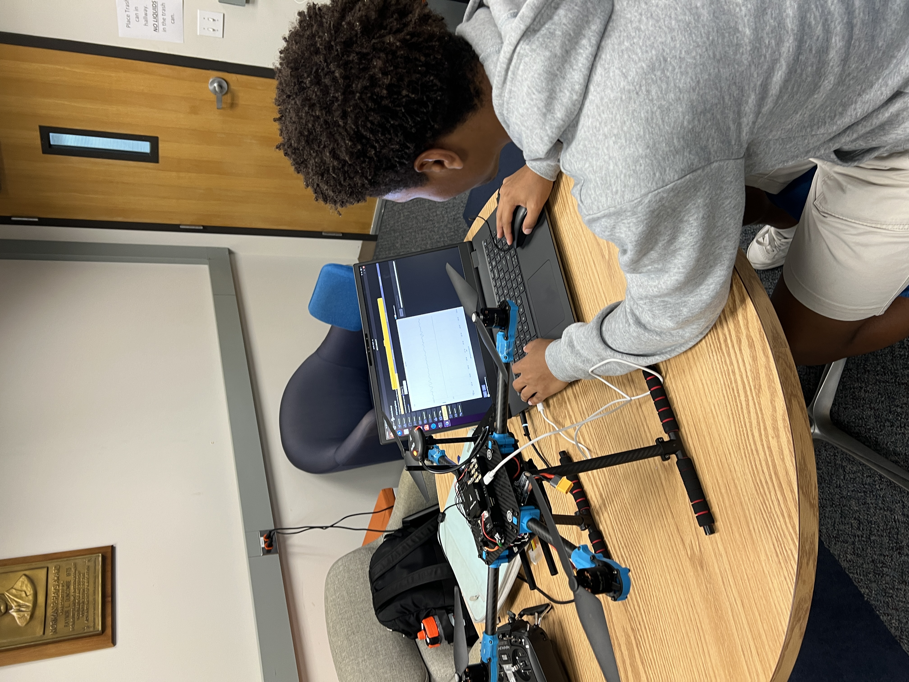
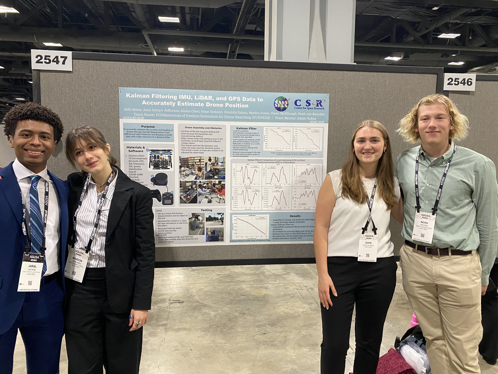
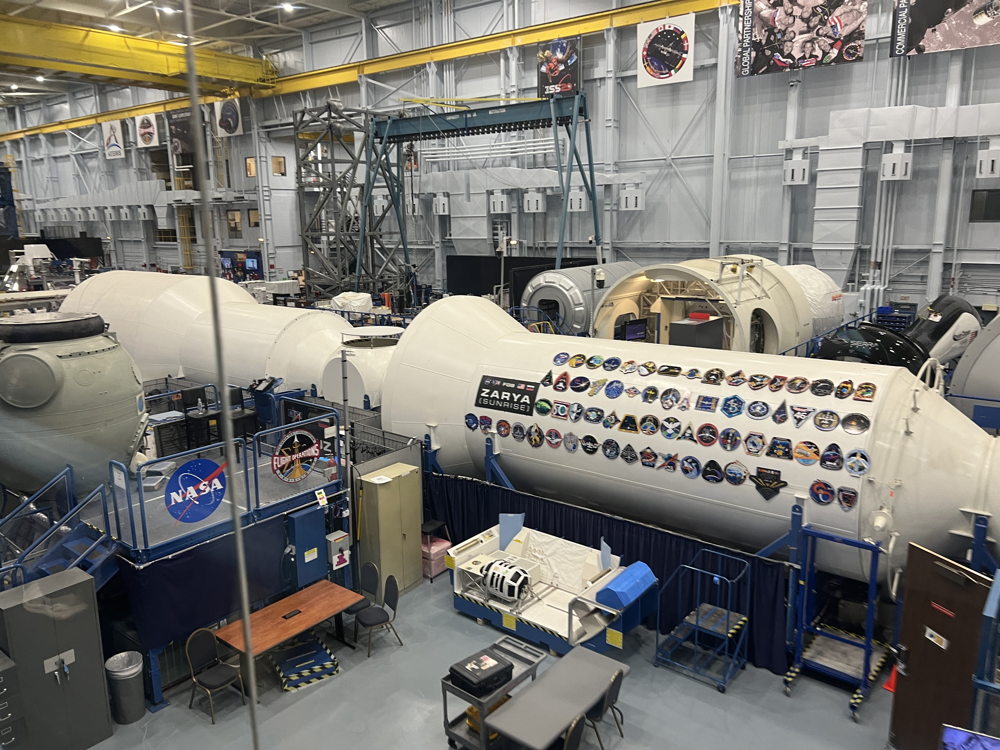
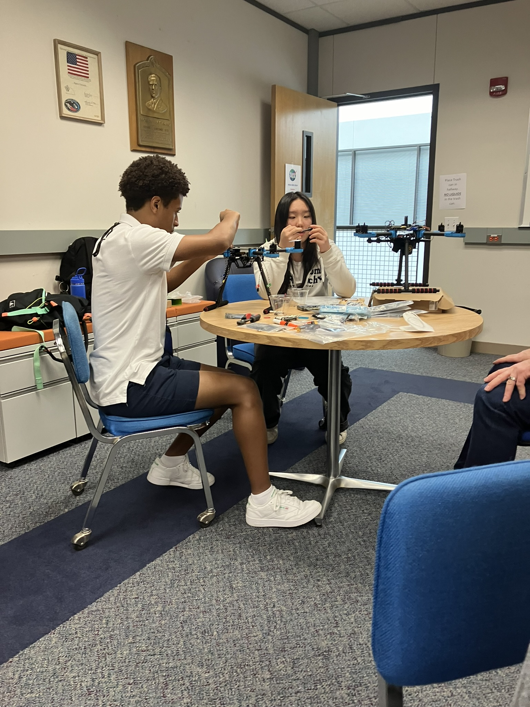
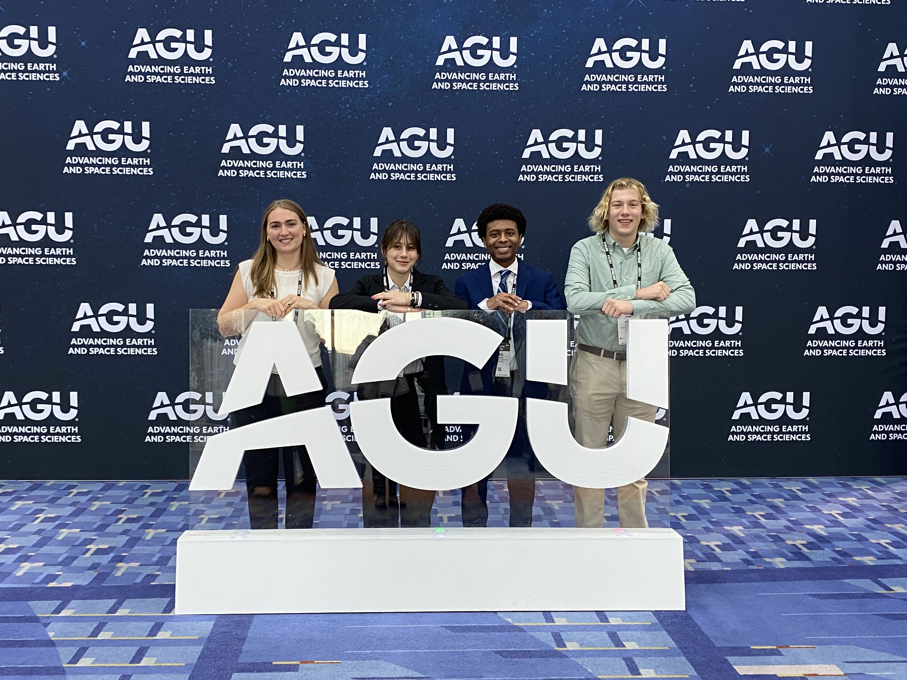
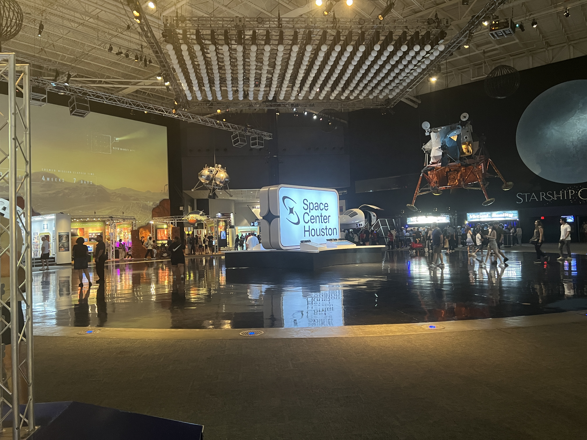
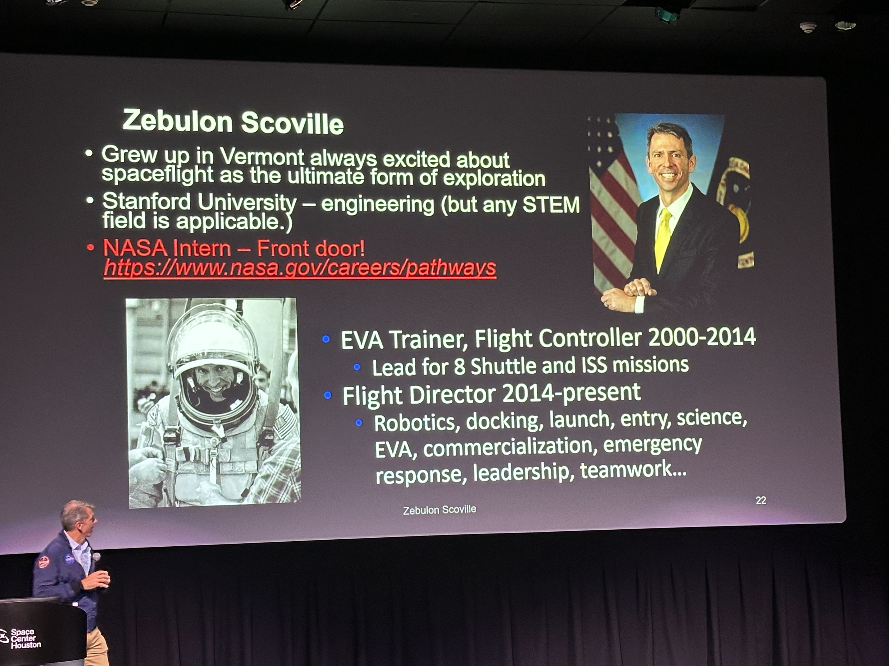

Through the NASA and University of Texas Center for Space Research
STEM Enhancement in Earth Science (SEES) program, I collaborated on an
aerial robotics research project focused on improving drone position
estimation. By combining Inertial Measurement Unit (IMU) and LiDAR
data through sensor fusion and advanced noise-filtering algorithms,
our team worked to drastically improve flight localization accuracy on
experimental drones and unmanned aerial vehicles (UAVs).
Investigated precise drone localization by implementing sensor
fusion algorithms combining onboard Inertial Measurement Unit
(IMU) and LiDAR data.
Assembled the experimental quadcopter mechanical chassis,
configured the open-source flight software stack, and served as
the primary flight test pilot for empirical data collection.
Programmed a data processing pipeline in Python using pyulog to
extract binary flight logs, applying a Kalman Filter that
successfully reduced localization sensor noise by 24%.
Showcased project outcomes via a research presentation at the
American Geophysical Union (AGU) 2024 Annual Meeting in
Washington, D.C.
Project gallery

Configuring the Drone

Group Photo at AGU

Johnson Space Center Tour

Drone Assembly

AGU Signage

Space Center Houston Visit

Talk from NASA Flight Director Zebulon Scoville!Full Team Photo